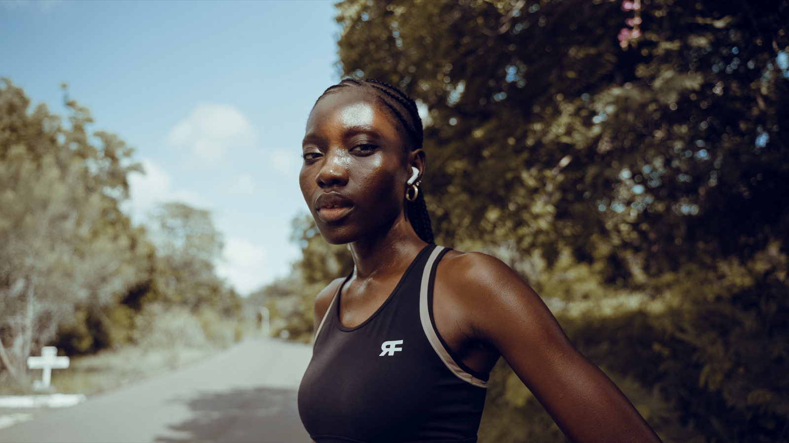
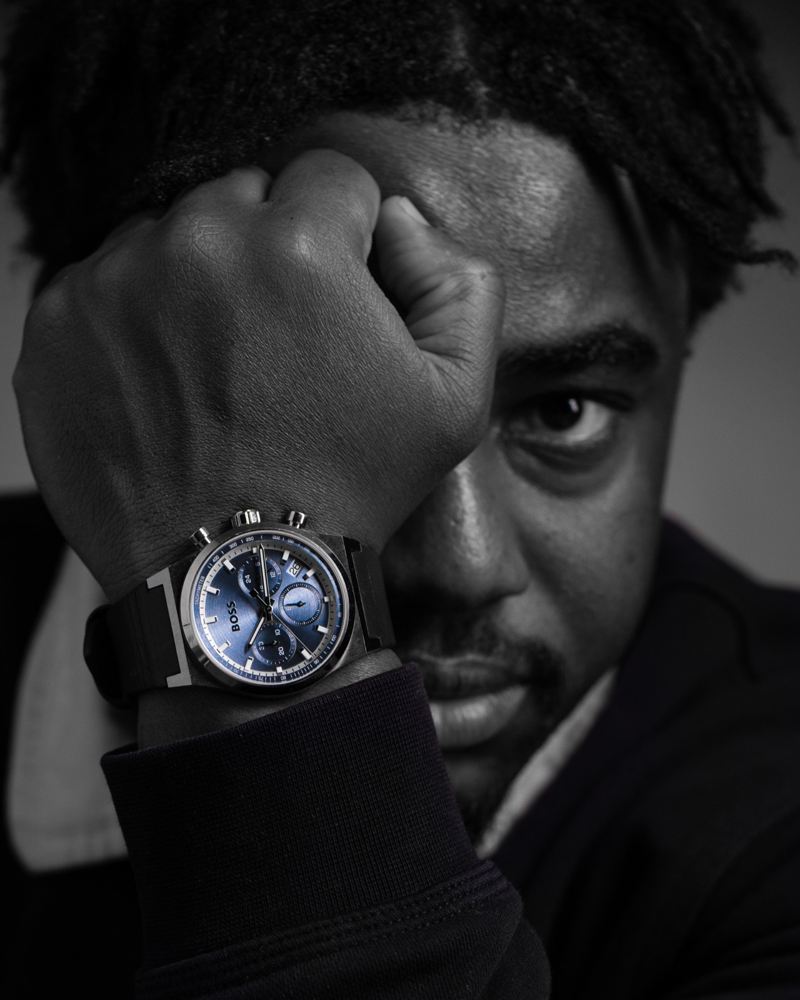
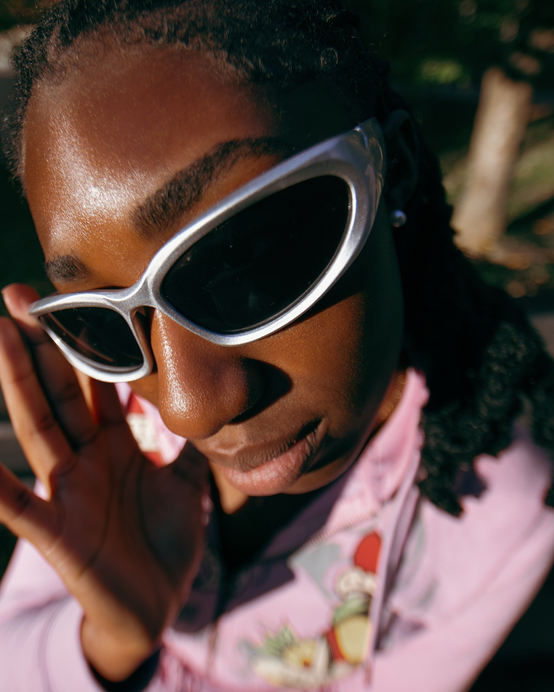
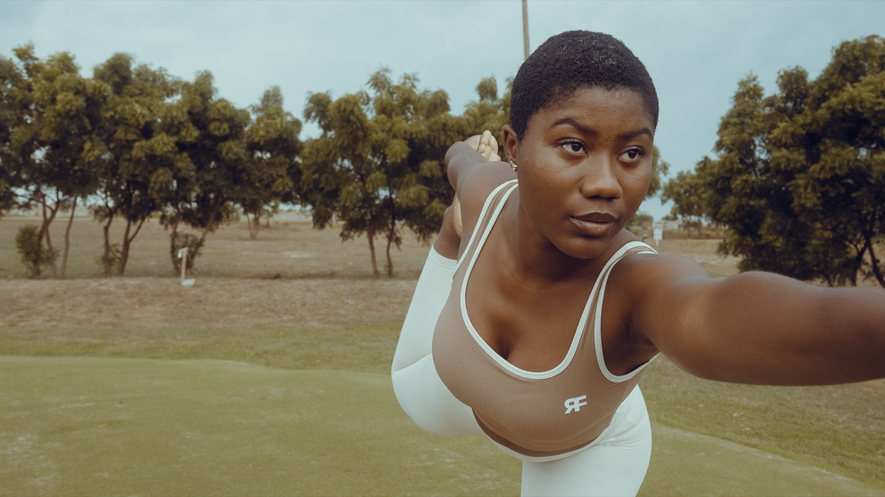

Commercial
On my commercial projects across Ghana, the United Kingdom, and the United States, I worked as both photographer and creative lead for clients including Google, PwC, Volkswagen, British International Investment, Johnnie Walker, Afrochella, and Christie Brown. I started each project by understanding the brand, its audience, and what the client wanted the images to achieve. I then built mood boards, directed the styling and wardrobe, and designed the lighting and setups to match the brand’s vision. On set, I directed the people in front of the camera so the images felt natural and true to the brand. For event projects, I planned how to tell the story of the event, not only for the people who were present, but for anyone who would later see the content and need to feel what the event stood for.



